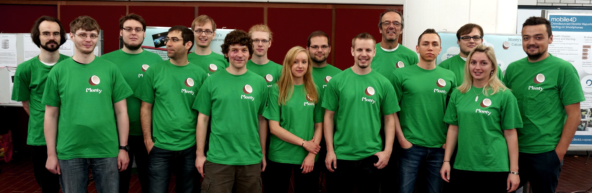

Background
During one's studies a computer science student is confronted with several different programming languages. Each of those has its own advantages and disadvantages for its certain kind of purpose. There is C/C++, which is extremely fast at runtime, because it is compiled to native machine code. On the other hand it is not very handy to use, especially if we are talking about memory management. Another example is Java, which is more comfortable to use, because it supports garbage collection and some other modern programming language features. The problem about Java is, that it comes with a lot of characteristics inherited from C++ which are not very intuitive to use and apart from that Java applications are slower because of the virtual machine architecture. Besides those two examples there are plenty of other languages. Some developers distinguish between scripting and programming languages. Scripting languages usually have a catchy and easily understandable syntax. This supports very fast development and rapid prototyping. Generally the runtime performance of scripted applications is not as good as in classic programming languages, because the scripts are not compiled, but interpreted at runtime. Often another disadvantage of scripting languages is the missing type safety. A good example of that is Python.
Motivation
The Monty-Gap
There are already thousands of programming languages. In some cases the differences between them are significant, in other cases they are very similar. So, why should one develop a new programming language?
The classic programming languages like C++ or Java are mainly about efficient implementations, while scripting languages target more on the ease of use. Between those two worlds there is a gap … until now.
Monty is thought to unite both worlds, without suffering legacy oddities from other languages. As a general purpose language it should provide the highest comfort for developers at the maximum of possible performance. That means that out goal is to design and implement a new language which has both, dynamic and static typing and provides the following features for developers:
- intuitive and readable syntax
- rapid implementation of application ideas (comfort)
- compiled language (quick execution)
The Name "Monty"
A famous scripting language is Python which was named after the British comedy group Monty Python. Accordingly, "Monty" is derived from that name in a similar manner. The name affix "Coconut" is derived from the German title of the movie "Monty Python and the Holy Grail", which is "Die Ritter der Kokosnuss" ("The Knights of the Coconut").
Design Paradigms
During the process of outlining Monty's features and behavior, we were faced with the question, how decisions should be made. That's why we came up with our Monty-Planet-Metaphor:

The Monty-Mission

Imagine there was a planet named Monty. This planet is inhabited by some Montians. These guys are really smart and have a thorough understanding of science and mathematics, but they don't know any kind of programming language. If you were on the Monty-Mission to bring these people a programming language, how should this language look like? Obviously syntactical resemblance to existing languages for the purpose of facilitating migration/adoption doesn't apply here and wouldn't be of much help to the guys on this planet.
Whenever we make decisions, we try to come back to this principle. we actually implemented many features which are also present in existing languages – not just because others did it, but rather because we think they are reasonable.
Another reference point for making decisions is the Zen of Python by Tim Peters. The Zen of Python includes 19 aphorisms about the design of the programming language Python. Phrases like "Readability counts", "Errors should never pass silently" or "Explicit is better than implicit" are often cited in discussions about language features.
The Project
Monty's Coconut is a student project initiated in winter term 2013/2014, also spanning the summer term 2014 at the University of Bremen. Its topic is the design and implementation of a hybrid language being both, a programming language and a scripting language.
At the University of Bremen, a significant part of the computer science master's degree program is the master project. In a master project eight to twenty students work together on a certain research topic or a software project. Usually the topics for master projects are proposed by the teachers or research groups. In this case the project was initiated by students. The project supervisors support the students by providing their expert knowledge and project work experience. However, the project is organized by the students themselves.
From October until November 2013 we looked at different language concepts and paradigms. Besides we read up on tools and strategies for compiler construction. We presented the first draft of our concepts in December 2013, when we were visited by our external advisor David Watt from the University of Glasgow.
Since January 2014 we have been working in small teams on two major aspects: One is the language definition of Monty, which contains the syntactical, contextual and semantical description of our concepts, as well as a rationale, which is supposed to shed light on the reasoning behind our decisions. which is thought to reason our our decisions. The other big area is the development of a Monty compiler including a detailed documentation of the implementation.